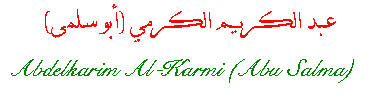

Abu Salma was born in 1907 in Haifa.
He studied law and worked in Haifa until April 1948 when the Israelis
occupied the city. He then moved to Akka. Shortly he left Akka to
Damascus. Abu Salma kept the keys to his house and office in Haifa
hoping to return.
He was a friend of Ibrahim Tukan. Their love of
poetry and Palestine built their friendship. Abu Salma wrote about his
love and yearning to Palestine. He was awarded The Lotas
International Reward for Literature in 1978 by The Association of
Asian and African Writers. He was also given the title The Olive of
Palestine.
Abu Salma died in 1980.
 Poem
Poem
[Arabic]
[English]
 Go back to Poets from Palestine
Go back to Poets from Palestine